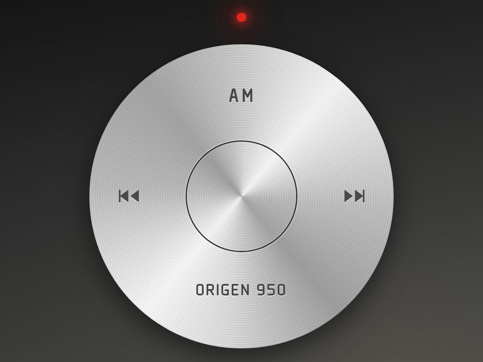
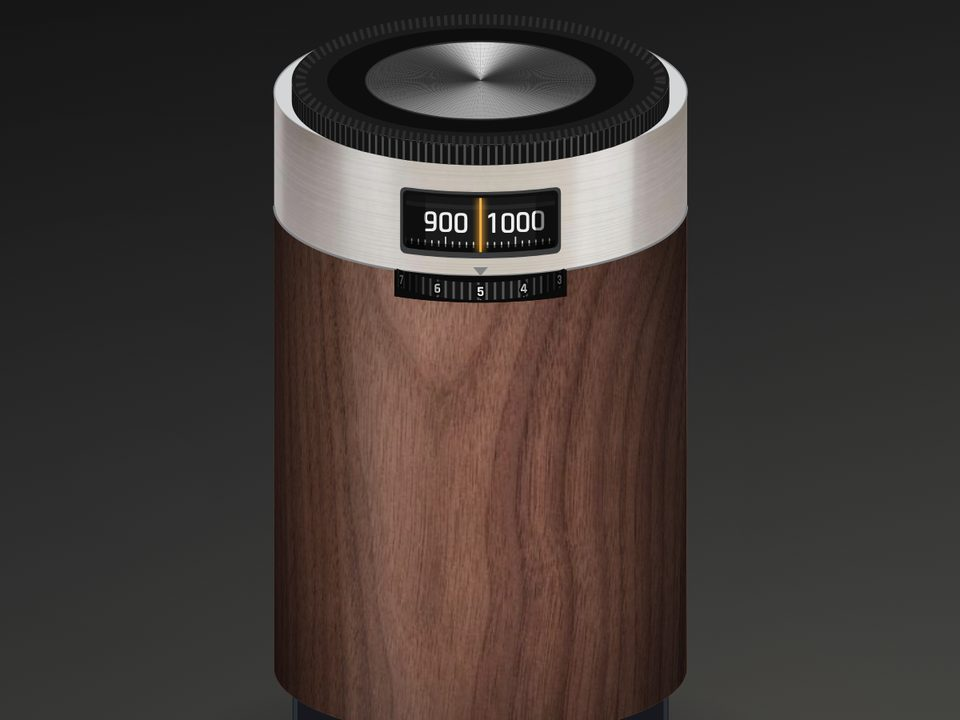
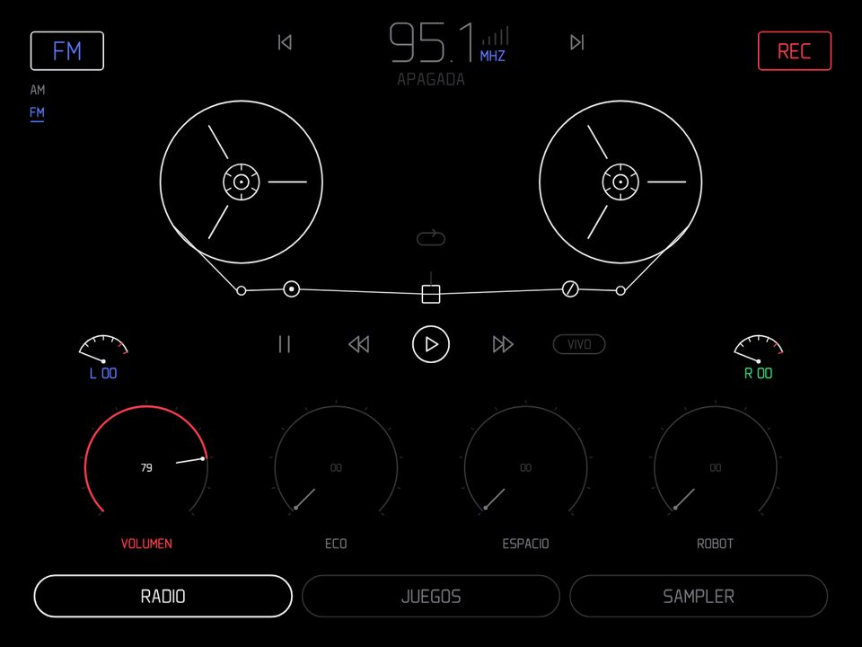
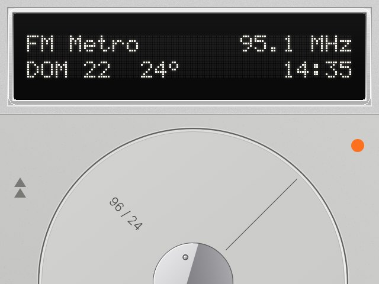
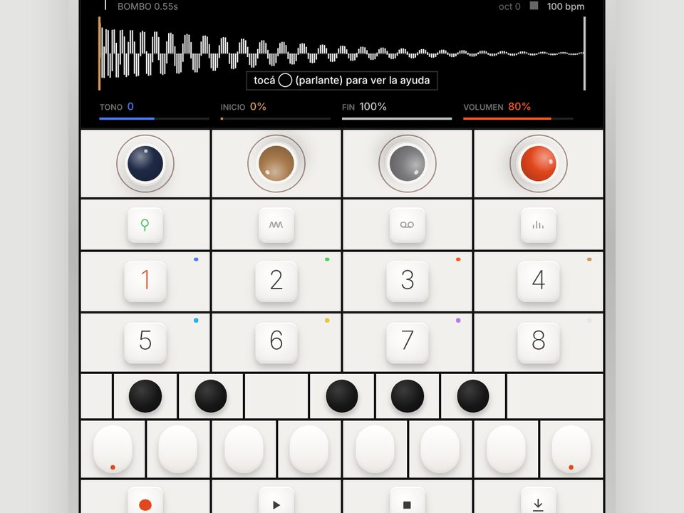
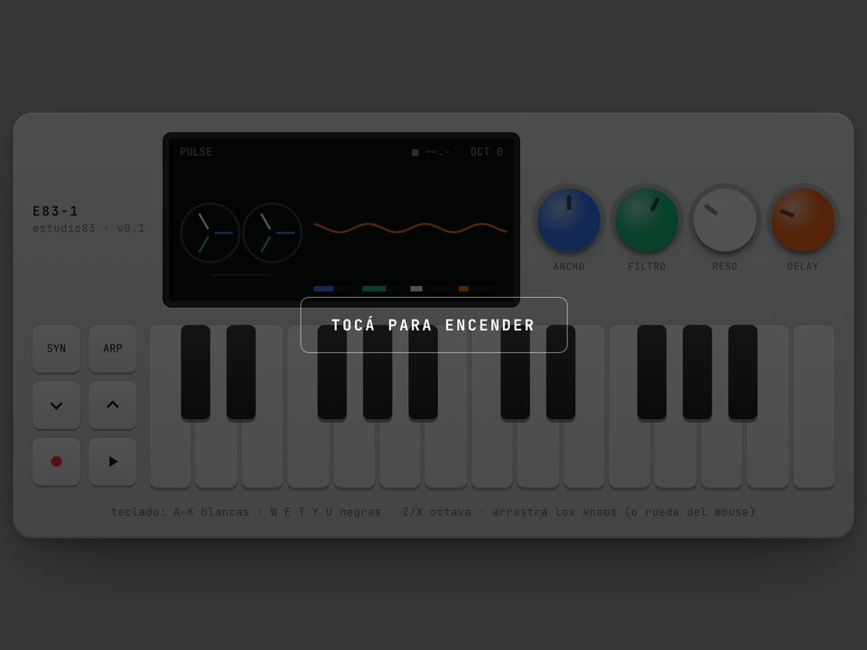
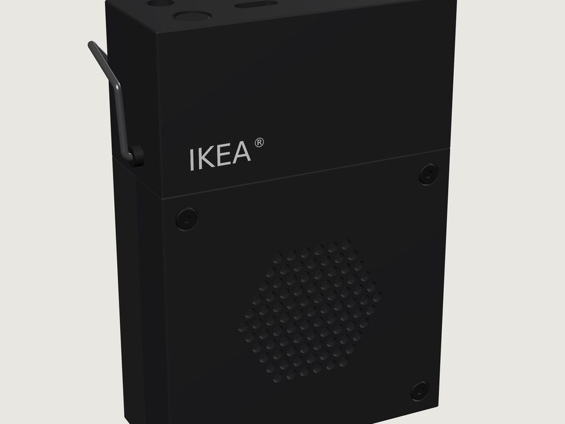
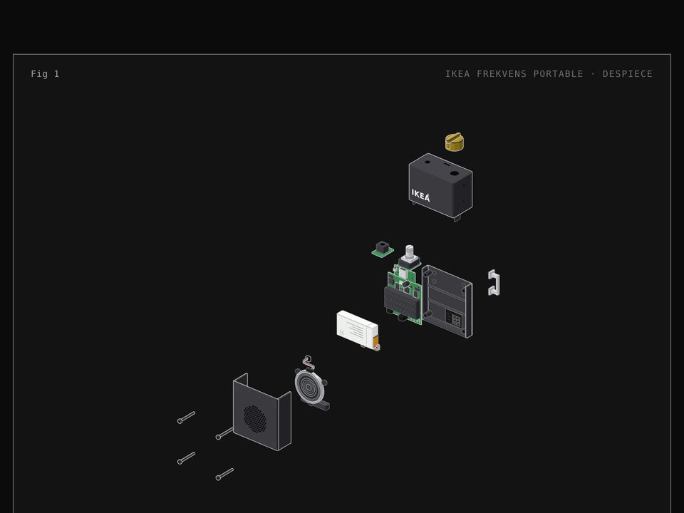
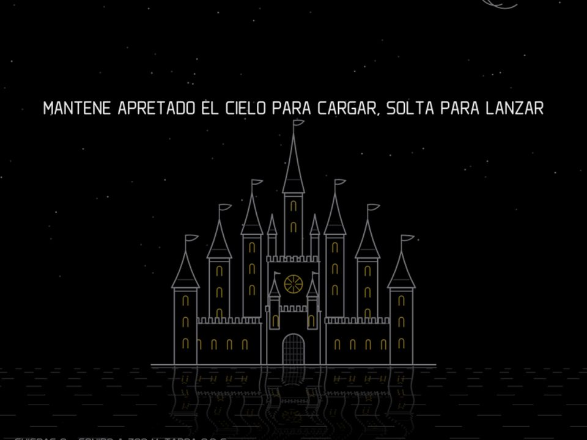
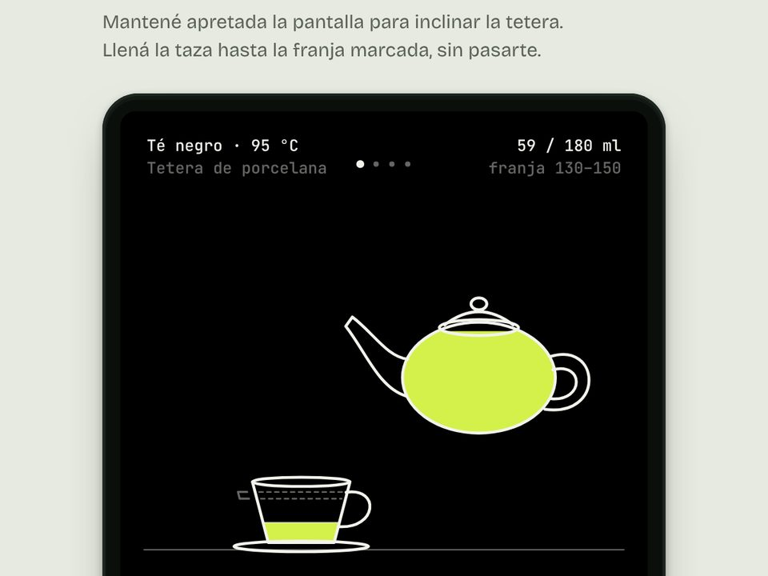

Radios, instrumentos y juegos que se tocan, se escuchan y se instalan en el teléfono.

Un disco de aluminio que se toca para encender, cambiar de radio y dormir.
CON CLAVE
Una radio cilíndrica de madera con dial de verdad y sonido de AM.
CON CLAVE
Un grabador de cinta abierta con radio, juegos y sampler.
CON CLAVE
La Radio B&O como app para iPod touch y iPhone con iOS 6: tocadiscos, clima, despertador y geometrías.
APP 1.44
Ocho pads, teclado, secuenciador y una biblioteca de sonidos.
CON CLAVE
Un estudio de música de bolsillo: sintetizador, teclado y pantalla.
CON CLAVE
El parlante de IKEA modelado pieza por pieza, a escala real.
CON CLAVE
El parlante desarmado en el aire: se toca y se separa.
CON CLAVE
Fuegos artificiales que se cargan y se lanzan sobre el río.
CON CLAVE
Inclinar la tetera y llenar la taza justo hasta la marca.
CON CLAVE